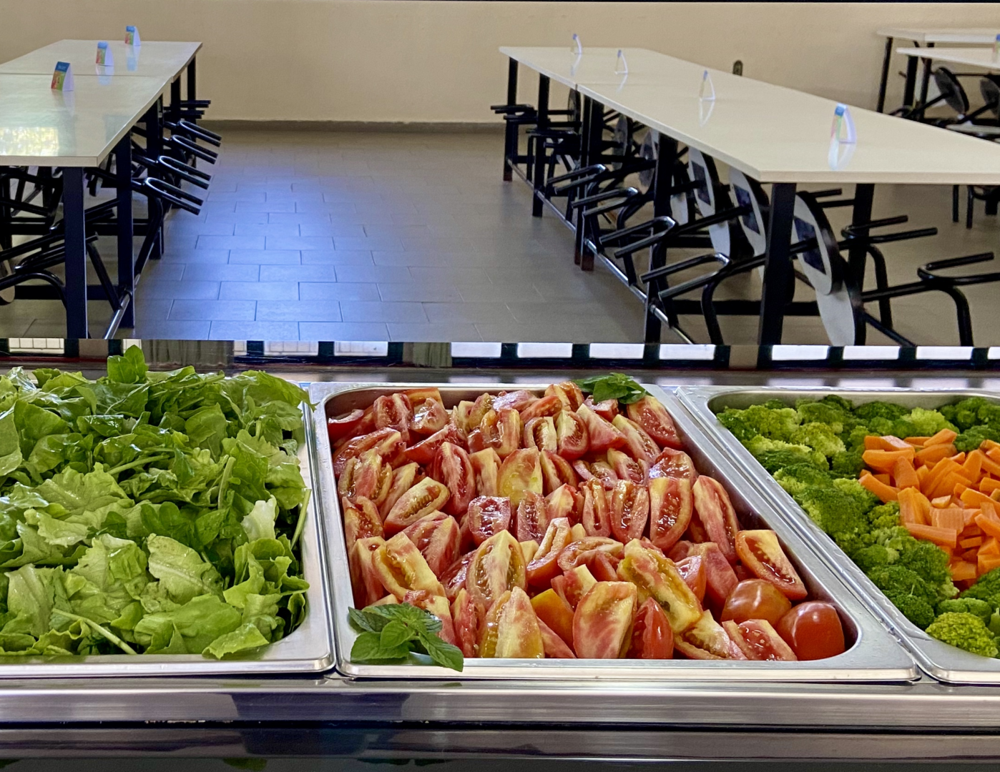

O Refeitório do campus funciona em dois períodos do dia para servir almoço e jantar a estudantes e servidores do IFRS Campus Bento Gonçalves.
O cardápio é disponibilizado toda semana sob responsabilidade da Nutricionista Maiara Bettanin.
| Cardápio | |||||
|---|---|---|---|---|---|
| Dia da semana | 2ª Feira | 3ª Feira | 4ª Feira | 5ª Feira | 6ª Feira |
| DATA | 01/05/23 | 02/05/23 | 03/05/23 | 04/05/23 | 05/05/23 |
|
ALMOÇO Seg. à Quinta (11:20 às 13:00) Sexta (11:50 às 13:00) |
Feriado Nacional |
Arroz Integral/feijão Polenta com guisado Saladas |
lanche |
Arroz/feijão Carreteiro Moranga Tempero Verde Saladas Sobremesa |
Arroz Integral/feijão Frango grelhado Batata Doce Saladas |
|
JANTA (17:40 às 18:45h) |
Feriado Nacional |
Arroz Integral/feijão Polenta com guisado Saladas |
Arroz Integral/feijão Panquecas Saladas |
Arroz/feijão Carreteiro Moranga Tempero Verde Saladas Sobremesa |
Arroz Integral/feijão Frango grelhado Batata Doce Saladas |